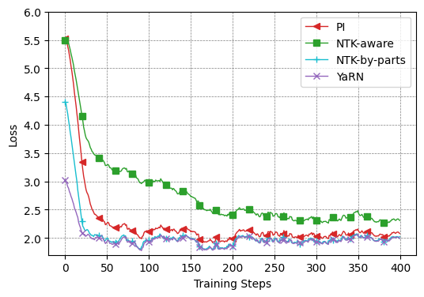
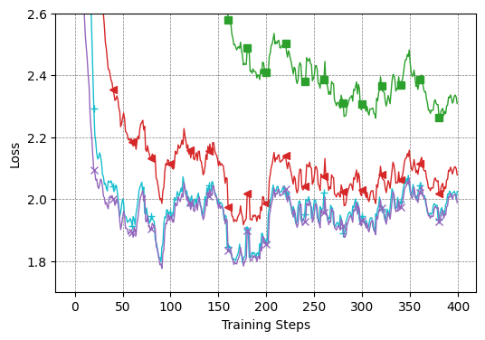

YaRN：高效扩展 RoPE 语言模型的上下文窗口¶
简述：对不同 RoPE 频段采用不同插值强度，再调整注意力温度，以较少继续训练将已有模型扩展到更长上下文。
论文：YaRN: Efficient Context Window Extension of Large Language Models · Peng、Quesnelle、Fan、Shippole · ICLR 2024；本文据 2026-02-06 修订的 arXiv v3。
研究对象：LLaMA / Llama 2，长序列语言建模与检索。官方代码与模型 · RoPE · Position Interpolation
论文简介¶
RoPE 能表达相对位置，却不能让语言模型自动泛化到远超训练窗口的序列；统一的位置插值又会压缩高频信息与局部距离。YaRN 在原窗口内的旋转圈数基础上区分频段：低频插值、高频保留、中间平滑混合，再用与扩展倍率相关的注意力温度改善长序列建模。作者通过少量长文本继续训练，将 Llama 2 的 4k 窗口扩展到 128k，而 128k 模型只使用 64k 训练序列。7B 模型在 128k Proof-pile 上的困惑度为 2.37，128k 模型的口令检索平均准确率达到 99.4%。结果支持高效长度扩展，但真实长文任务、短任务保真与计算成本仍需分别评估。
摘要¶
本文提出 YaRN（Yet another RoPE extensioN method），在保留模型主体架构的情况下改进 RoPE 上下文扩展。方法结合分频插值与注意力缩放，并可与推理时的 Dynamic Scaling 组合。
作者报告，相对所比较的前作配置，YaRN 可使用约 10 倍更少的训练 tokens、2.5 倍更少的训练步数完成有效扩展。实验还表明，模型能利用先前扩展的 checkpoint 继续训练，并外推到超过微调序列长度的上下文。
引言与相关工作¶
语言模型的最大上下文长度通常受预训练过程限制。绝对位置编码、T5 相对偏置、RoPE、XPos 与 ALiBi 等方法各有设计，但相对位置形式本身并不能保证远距离泛化。
本文围绕 RoPE 的已有扩展路线展开：
- Position Interpolation（PI）：将新位置线性压回原训练范围，通过少量微调适配。
- NTK-aware：改变 RoPE 基数，让高频少缩、低频多缩。
- NTK-by-parts：明确划分频段，分别决定是否插值。
- Dynamic Scaling：在推理时随当前序列长度改变缩放倍率。
ReRoPE 与同期 LM-Infinite 也研究长度泛化，但涉及注意力机制修改。作者将本文比较重点放在不改变注意力算子、可兼容 FlashAttention 2 的位置插值方法。

图 1（原文 Figure 1）：YaRN 建立在 NTK-by-parts 的分频思想上，并加入注意力缩放；Dynamic Scaling 是可以与这些插值方法组合的推理策略。
背景：RoPE、波长与位置插值¶
RoPE 如何编码距离¶
RoPE 把相邻两个维度组成一个二维旋转平面，在位置 \(m\) 旋转 \(m\theta_d\)。用从零开始的二维频段下标 \(d\) 表示，设旋转维数为偶数 \(D\)：
在复数记号下，查询与键的旋转可写成：
两者内积中的旋转相位依赖 \(m-n\)。原模型在训练中只见过有限长度，因此更大的相位组合仍可能超出已学习分布。
波长与扩展倍率¶
设预训练窗口为 \(L\)，目标窗口为 \(L'\)，扩展倍率与各频段波长分别为：
PI 将位置压缩为 \(m/s\)，等价于把所有频率变为 \(\theta_d/s\)。这避免了直接外推，却同时缩小相邻 token 的相位差；高频损失会随倍率增加而加重。
此处按原文附录式 (16) 表示 PI；v3 正文式 (9) 的 \(s\cdot m\) 与其倍率定义不一致。
方法¶
NTK-aware：通过基数变化分配插值压力¶
NTK-aware 不再对全部频段统一缩放，而采用：
这样最高频保持不变，最低频按目标倍率缩放，中间频率逐步变化。它保留了更多高频信息，但部分频段仍会进入原窗口未覆盖的范围，实际应选择的基数或倍率需要经验确定。
NTK-by-parts：根据旋转圈数区分频段¶
作者进一步考察原窗口内每个频段旋转了多少圈：
当波长远小于 \(L\) 时，原训练窗口已覆盖多次完整旋转，作者主张保留这些频段的局部相对位置信息；波长不小于 \(L\) 时，原窗口没有覆盖完整旋转，应通过插值避免外推。中间区域采用平滑混合。
引入阈值 \(\alpha,\beta\)，定义：
新频率为：
因此，低频充分插值，高频不变，中间频段兼有两者。论文在 Llama 家族上的经验取值为 \(\alpha=1,\beta=32\)，其他模型需要针对性选择。
YaRN：加入注意力温度¶
在 NTK-by-parts 基础上，YaRN 将注意力权重改为：
实现时可将查询和键同时乘以 \(\sqrt{1/t}\)，并将这个系数合入预计算的 RoPE 旋转表示，从而保持注意力算子代码不变。对 LLaMA 与 Llama 2，作者推荐：
这一经验式来自不同倍率下的困惑度拟合：作者先在未经微调的 LLaMA 7B、13B、33B、65B 上寻找较优系数，再观察到它在 Llama 2 上也有较好的适用性。
YaRN 指的就是 NTK-by-parts 与上述注意力缩放的组合。固定窗口下，旋转表示可以预先生成并复用，因此插值修改本身不增加额外的注意力算子开销。
Dynamic Scaling：随当前长度更新倍率¶
固定缩放在整个推理过程中使用 \(s=L'/L\)。Dynamic Scaling 则在每次前向时，根据当前序列长度 \(\ell\) 设置：
它使短输入保留原尺度，并在长度增加时逐渐调整；超过原固定窗口时，也可避免突变式的性能崩溃。该策略能与 PI、NTK-aware、NTK-by-parts、YaRN 分别组合。
动态倍率与 KV cache 需要保持一致。因为 \(s\) 改变时所有历史 token 的 RoPE 也随之改变，论文建议缓存施加 RoPE 之前的表示，再按当前倍率使用，避免混用不同尺度的历史键。
实验设置¶
模型与继续训练¶
作者使用 PG19 英文书籍语料，切成连续片段，并在两端加入 BOS/EOS。训练采用 AdamW，学习率 \(2\times10^{-5}\)，\(\beta_1=0.9,\beta_2=0.95\)，无 weight decay，20 步线性 warmup；全局 batch 为 64，使用 FSDP 与 FlashAttention 2。
| 模型与用途 | 原始窗口 | 训练数据长度 | 扩展倍率 | 训练步数 | 目标窗口 |
|---|---|---|---|---|---|
| LLaMA 7B：方法消融 | 2k | 32k | 16 | 400 | 32k |
| Llama 2 7B / 13B | 4k | 64k | 16 | 400 | 64k |
| 上一行 checkpoint 继续训练 | 4k | 64k | 32 | 追加 200 | 128k |
128k 模型从已经训练好的 64k checkpoint 出发，但继续训练仍使用 64k 数据。这是论文考察“训练较短、测试更长”能力的主要设置。


图 2（原文 Figure 2）：在相同 400 步预算下比较插值方法，YaRN 收敛较快并保持较低训练损失。右图放大曲线后半段。
评测任务¶
- 长序列语言建模：Proof-pile 数学与科学文本，以及 GovReport 政府报告；只使用测试划分，滑动窗口步长为 \(S=256\)。
- 口令检索：从大量无关文本中找回随机放置的五位数字，检查远距离简单信息定位。
- 短任务保真：25-shot ARC-Challenge、10-shot HellaSwag、5-shot MMLU、0-shot TruthfulQA。
Proof-pile 主实验随机取 10 篇至少含 128k tokens 的文档，在多个截断长度下评测。GovReport 附录实验取 50 篇至少含 16k tokens 的文档，固定最大评测窗口为 32k。
实验结果¶
长序列语言建模¶
原文 Table 1 的 Proof-pile 困惑度如下，越低越好：
| 模型 | 总训练步数 | 配置窗口 | 8k | 16k | 32k | 64k | 128k |
|---|---|---|---|---|---|---|---|
| Llama 2 7B | 400 | 64k | 3.51 | 2.99 | 2.65 | 2.42 | >10 |
| Llama 2 7B | 400+200 | 128k | 3.56 | 3.04 | 2.70 | 2.45 | 2.37 |
| Llama 2 13B | 400 | 64k | 3.25 | 2.79 | 2.50 | 2.29 | >10 |
| Llama 2 13B | 400+200 | 128k | 3.29 | 2.83 | 2.53 | 2.31 | 2.24 |
固定为 64k 的模型到 128k 时困惑度明显变差；使用更高倍率继续训练后，128k 结果仍然良好。作者据此说明：YaRN 可以利用已有扩展 checkpoint 继续适配，并泛化到超出训练序列长度的窗口。


图 3（原文 Figure 3）：模型均为扩展到 32k、训练 400 步的 LLaMA 7B。左图显示长文语言建模差异，右图检查简单信息能否在不同长度下找回。
附录 Table 5 中，相同 400 步配置的对比如下：
| 方法 | 2k PPL | 4k PPL | 8k PPL | 16k PPL | 32k PPL |
|---|---|---|---|---|---|
| PI | 5.70 | 4.95 | 4.64 | 3.97 | 3.57 |
| NTK-aware | 4.39 | 3.92 | 3.73 | 3.21 | 8.49 |
| NTK-by-parts | 4.14 | 3.75 | 3.62 | 3.12 | 2.81 |
| YaRN | 4.19 | 3.77 | 3.30 | 3.09 | 2.77 |
NTK-by-parts 大幅改善了 PI 与 NTK-aware 的长上下文结果；加入温度后，YaRN 在较长窗口继续降低 PPL，不过在 2k、4k 上并非逐格最优。
口令检索¶
32k LLaMA 7B 实验在 2k–32k 的不同长度上各测试 50 次，口令位置均匀随机。对 64k / 128k 的 Llama 2 模型，则在 8k–128k 的不同长度上各测试 10 次。以下为附录 Table 9：
| 模型 | 配置窗口 | 训练数据长度 | 方法 | 口令有效窗口 | 平均准确率 |
|---|---|---|---|---|---|
| Together 7B | 32k | 32k | PI | 32k | 100% |
| Code Llama 7B | 100k | 16k | NTK | 112k | 94.3% |
| YaRN 7B | 64k | 64k | YaRN | 64k | 96.3% |
| YaRN 7B | 128k | 64k | YaRN | 128k | 99.4% |
| Code Llama 13B | 100k | 16k | NTK | 128k | 99.4% |
| YaRN 13B | 64k | 64k | YaRN | 64k | 97.5% |
| YaRN 13B | 128k | 64k | YaRN | 128k | 99.4% |
“口令有效窗口”是准确率至少 80% 的最大测试长度；准确率是该有效窗口以内所测试长度的平均。Code Llama 的 PPL 在某些超长设置下已上升，却仍能找回口令，说明困惑度与信息检索能力不能互相替代。
标准化短任务¶
原文 Table 2 比较 LLaMA 7B 在相同 400 步长文训练后的表现：
| 方法 | 窗口 | ARC-c | HellaSwag | MMLU | TruthfulQA |
|---|---|---|---|---|---|
| 原模型，未微调 | 2k | 51.0 | 77.8 | 35.7 | 34.3 |
| PI | 32k | 44.8 | 70.2 | 25.9 | 34.1 |
| NTK-aware | 32k | 47.4 | 73.9 | 27.7 | 32.6 |
| NTK-by-parts | 32k | 48.5 | 76.6 | 32.7 | 33.4 |
| YaRN | 32k | 48.1 | 77.2 | 30.0 | 35.1 |
原文 Table 3 比较 Llama 2 及其 YaRN 模型：
| 模型 | 窗口 | ARC-c | HellaSwag | MMLU | TruthfulQA |
|---|---|---|---|---|---|
| Llama 2 7B 原始 | 4k | 53.1 | 77.8 | 43.8 | 39.0 |
| YaRN 7B | 64k | 52.3 | 78.8 | 42.5 | 38.2 |
| YaRN 7B | 128k | 52.1 | 78.4 | 41.7 | 37.3 |
| Llama 2 13B 原始 | 4k | 59.4 | 82.1 | 55.8 | 37.4 |
| YaRN 13B | 64k | 58.1 | 82.3 | 52.8 | 37.8 |
| YaRN 13B | 128k | 58.0 | 82.2 | 51.9 | 37.3 |
作者将 Llama 2 的整体变化概括为较小退化，并指出 PG19 与原始预训练语料不同。表中也显示任务差异：13B 的 HellaSwag 基本保留，而 MMLU 从 55.8 降到 51.9。
计算效率¶
固定长度下，RoPE 的插值表示可缓存，所以改变插值公式不会增加对应位置编码的计算与内存开销。原文 Table 4 给出了不同公开模型的训练时间：
| 7B 模型 / 来源 | 方法 | 扩展配置 | 报告有效窗口 | A100 GPU 小时 |
|---|---|---|---|---|
| LLaMA YaRN | YaRN | 2k × 16 | 32k | 128 |
| Llama 2 YaRN | YaRN | 4k × 16 | 64k | 256 |
| Llama 2 YaRN | YaRN | 4k × 32 | 128k | 256+128 |
| Chen 等 | PI | 2k × 8 | 16k | 640 |
| Together.ai | PI | 4k × 8 | 32k | 未报告 |
| Xiong 等 | NTK-aware | 4k × 44.2 | 约 50k | 64,000 |
| Code Llama | NTK-aware | 4k × 88.6 | 约 100k | 6,400 |
这些条目对应不同训练配置；更直接的步数比较来自附录 Table 6：Llama 2 7B 扩到 8k 时，PI 训练 1,000 步得到 PPL 3.34，YaRN 训练 400 步得到 3.35，支持特定设置下的 2.5 倍训练步数效率。
附录中的补充证据¶
注意力缩放的拟合¶

图 4（原文 Figure 4）：固定 \(s=8\)，在 RedPajama 的 16k-token 样本上比较 \(1/\sqrt t\)；较优区域接近经验式给出的 1.208。作者进一步按 token 位置切分，观察到合适的系数能在多个位置区域改善 PPL，最优区域在样本与位置之间较一致。
政府报告与未经微调的模型¶
附录 Table 8 在 50 篇 GovReport 文档上固定 32k 评测窗口：YaRN 7B 的 64k / 128k 模型 PPL 为 3.59 / 3.64，13B 为 3.35 / 3.39，说明效果不局限于 Proof-pile。

图 8（原文 Figure 8）：固定一篇 GovReport 文档，比较原 RoPE、Dynamic-PI 和 Dynamic-YaRN。动态方法缓解超出预训练窗口后的 PPL 爆发，该样本上 Dynamic-YaRN 优于 Dynamic-PI；这组实验没有进行长上下文微调。
结论与可复现性¶
YaRN 将高频保留、低频插值和注意力温度调整组合成简单的位置编码改动，能够在不修改主体注意力架构的情况下扩展上下文。实验展示了从原模型到 64k、再到 128k 的继续适配，以及只用 64k 训练数据完成 128k 测试的能力。
作者公开了训练与评测代码，并使用可获得的 PG19 数据。原论文证据主要来自 LLaMA 家族、英语长文困惑度、合成口令与短任务基准；对真实长文推理、新架构和不同倍率的适用性，应以对应任务的结果为依据。